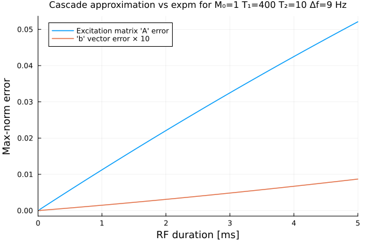
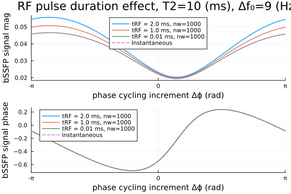

bSSFP RF Duration
This page illustrates using the Julia package BlochSim to calculate MRI signals for balanced steady-state free precession (bSSFP) pulse sequences.
Specifically it examines the effects of finite RF pulse duration.
References
- todo
This page comes from a single Julia file: bssfp-rf-dur.jl.
You can access the source code for such Julia documentation using the 'Edit on GitHub' link in the top right. You can view the corresponding notebook in nbviewer here: bssfp-rf-dur.ipynb, or open it in binder here: bssfp-rf-dur.ipynb.
Setup
First we add the Julia packages that are need for this demo. Change false to true in the following code block if you are using any of the following packages for the first time.
if false
import Pkg
Pkg.add([
"BlochSim"
"ForwardDiff"
"InteractiveUtils"
"LaTeXStrings"
"LinearAlgebra"
"MIRTjim"
"Plots"
])
endTell this Julia session to use the following packages for this example. Run Pkg.add() in the preceding code block first, if needed.
using BlochSim: Spin, SpinMC, InstantaneousRF, RF, excite
using BlochSim: bssfp, GAMMA, expm_bloch3, excite_bloch3
using MIRTjim: prompt
using Plots: gui, plot, plot!, default
default(titlefontsize = 10, markerstrokecolor = :auto, label="", width = 1.5,
linewidth=2)The following line is helpful when running this file as a script; this way it will prompt user to hit a key after each figure is displayed.
isinteractive() || prompt(:draw);RF pulse duration effects for 1-pool model
Examine effects of finite RF pulse duration for a single spin with a relatively short T2.
Mz0, T1_ms, T2_ms, Δf_Hz = 1, 400, 10, 9 # tissue parameters
α_deg = 50 # flip angle °
TR_ms, TE_ms, α_rad = 8, 4, deg2rad(α_deg) # scan parameters
spin = Spin(Mz0, T1_ms, T2_ms, Δf_Hz)
Δϕ_rad = range(-1, 1, 101) * π # phase-cycling factors
_bssfp(TE_ms, Δϕ, rf) = bssfp(Mz0, T1_ms, T2_ms, Δf_Hz, TR_ms, TE_ms, Δϕ, rf)
_bssfp(TE_ms, rf) = map(Δϕ -> _bssfp(TE_ms, Δϕ, rf), Δϕ_rad) # helper
rf0 = InstantaneousRF(α_rad)
signal0te = _bssfp(TE_ms, rf0); # signal for InstantaneousRF at TE
"""
b1_gauss(α_rad, tRF_ms)
Return finite-duration (rectangular) RF pulse amplitude
- `GAMMA` has units rad/s/G
- Tip angle for constant pulse:
`α_rad = GAMMA * b1_gauss * tRF_s`
- so `b1_gauss = α_rad / GAMMA / tRF_s`
"""
b1_gauss(α_rad, tRF_ms) = α_rad / GAMMA / (tRF_ms / 1000);helper to make 1-sample RF "waveforms"
function RF1(α_rad, tRF_ms)
waveform = [1] * b1_gauss(α_rad, tRF_ms) # single sample "waveform"
return RF(waveform, tRF_ms)
end;Test "nearly instantaneous" RF pulse
rf1 = RF1(α_rad, 1e-12) # super-short for first test
signal1te = _bssfp(TE_ms, rf1)
@assert signal0te ≈ signal1te # should be essentially identical
@assert α_rad == rf0.α ≈ only(rf1.α)Test 2ms RF pulse
Somewhat unexpectedly (to JF), the bSSFP signal matches the InstantaneousRF case.
The default BlochSim.excite! uses a "cascade" approximation that treats each RF sample as:
- free precession for Δt/2
- instantaneous RF rotation
- free precession for Δt/2.
By the time we reach TE = TR/2, apparently this approximation yields the same transverse magnetization as an instantaneous RF pulse!
rf2 = RF1(α_rad, 2) # 2 ms tRF_ms
signal2te = _bssfp(TE_ms, rf2)
@assert signal0te ≈ signal2te # matches!?
@assert α_rad == rf0.α ≈ only(rf2.α)In contrast, immediately after the RF pulse, the signal for the 2 ms RF pulse differs from that of the instantaneous RF.
signal0rf = _bssfp(Val(:postRF), 0, rf0)
signal1rf = _bssfp(Val(:postRF), 0, rf1)
signal2rf = _bssfp(Val(:postRF), 0, rf2)
@assert signal0rf ≈ signal1rf
@assert !(signal0rf ≈ signal2rf)Examine excitation matrices for different RF types.
A0, B0 = excite(spin, rf0)
A1, B1 = excite(spin, rf1)
@assert B0 === nothing
@assert maximum(abs, Vector(B1)) ≤ 1e-14 # 15*eps()
@assert Matrix(A0) ≈ Matrix(A1) # similar as expected for super-short RF
A2, B2 = excite(spin, rf2)
@assert Matrix(A1) ≉ Matrix(A2) # differ, as expected
@assert Vector(B1) ≉ Vector(B2)RectRF excitation approximation
Examine the approximation error of the "cascade" approximation compared to the "exact" 3×3 Bloch matrix exponential expm_bloch3 for rectangular RF pulses of various durations (with zero gradient for simplicity).
Instantaneous case reveals a π/2 difference
w0 = 2π * (Δf_Hz/1000) # rad/ms
Δϕ_rad0 = 0
E0 = expm_bloch3(0, 0, 0*w0, # must ignore Δf₀ for this test
α_rad * sin(Δϕ_rad0+π/2), α_rad * cos(Δϕ_rad0+π/2), 1)
@assert E0 ≈ Matrix(A0)
r1_kHz = 1 / spin.T1
r2_kHz = 1 / spin.T2
tRF_list = range(0.02, 5, 250)
errora = similar(tRF_list)
errorb = similar(tRF_list)
for (i, tRF) in enumerate(tRF_list)
rf = RF1(α_rad, tRF) # single sample RF waveform
(E3, b3) = excite_bloch3(r1_kHz, r2_kHz, w0,
α_rad/tRF * sin(Δϕ_rad0+π/2), α_rad/tRF * cos(Δϕ_rad0+π/2), tRF)
Ae, Be = excite(spin, rf)
errora[i] = maximum(abs, Matrix(Ae) - E3)
errorb[i] = maximum(abs, Vector(Be) - b3)
end
plot(title =
"Cascade approximation vs expm for M₀=$Mz0 T₁=$T1_ms T₂=$T2_ms Δf=$Δf_Hz Hz",
xaxis = ("RF duration [ms]", (0,5), ),
yaxis = ("Max-norm error", ),
)
plot!(tRF_list, errora, label = "Excitation matrix 'A' error")
plot!(tRF_list, 10errorb, label = "'b' vector error × 10")
prompt()WIP
using BlochSim: duration, freeprecess using LinearAlgebra: I (Afp0, dfp0) = freeprecess(spin, TRms - duration(rf0)) (Afp2, dfp2) = freeprecess(spin, TRms - duration(rf2)) At0 = Matrix(A0 * Afp0) At2 = Matrix(A2 * Afp2) Mss0 = (I - At0) \ Vector(A0 * dfp0) Mss2 = (I - At2) \ Vector(A2 * dfp2 + B2)
bs0 = bssfp(spin, TRms, duration(rf0)/2, 0, rf0) # signal right after RF @assert bs0 == bssfp(spin, TRms, Val(:postRF), 0, rf0) # signal right after RF bs2 = bssfp(spin, TRms, duration(rf2)/2, 0, rf2) @assert bs2 == bssfp(spin, TRms, Val(:postRF), 0, rf2) @assert bs0 ≈ complex(Mss0[1], Mss0[2]) @assert bs2 ≈ complex(Mss2[1], Mss2[2]) @assert !(bs0 ≈ bs2) # these differ, as expected
Plot
xaxis = ("phase cycling increment Δϕ (rad)", (-π, π), ((-1:1).*π, ["-π", "0", "π"]))
prfm = plot( ; xaxis, ylabel = "bSSFP signal mag", legend=:top)
prfa = plot( ; xaxis, ylabel = "bSSFP signal phase",);
nw = 1000 # approximately 1μs dwell time
for tRF_ms in [2 1 1e-2]
waveform = ones(nw) * b1_gauss(α_rad, tRF_ms)
rf = RF(waveform, tRF_ms / nw)
@assert rf0.α ≈ sum(rf.α)
signal4te = _bssfp(TE_ms, rf)
label = "tRF = $tRF_ms ms, nw=$nw"
plot!(prfm, Δϕ_rad, abs.(signal4te); label)
plot!(prfa, Δϕ_rad, angle.(signal4te); label)
end;
plot!(prfm, Δϕ_rad, abs.(signal0te), label="Instantaneous", line=:dash)
plot!(prfa, Δϕ_rad, angle.(signal0te), label="Instantaneous", line=:dash);
prf = plot(prfm, prfa, layout=(2,1),
plot_title = "RF pulse duration effect, T2=$T2_ms (ms), Δf₀=$Δf_Hz (Hz)")
prompt()Effect on qMRI
todo
Reproducibility
This page was generated with the following version of Julia:
using InteractiveUtils: versioninfo
io = IOBuffer(); versioninfo(io); split(String(take!(io)), '\n')12-element Vector{SubString{String}}:
"Julia Version 1.12.6"
"Commit 15346901f00 (2026-04-09 19:20 UTC)"
"Build Info:"
" Official https://julialang.org release"
"Platform Info:"
" OS: Linux (x86_64-linux-gnu)"
" CPU: 4 × Intel(R) Xeon(R) Platinum 8370C CPU @ 2.80GHz"
" WORD_SIZE: 64"
" LLVM: libLLVM-18.1.7 (ORCJIT, icelake-server)"
" GC: Built with stock GC"
"Threads: 1 default, 1 interactive, 1 GC (on 4 virtual cores)"
""And with the following package versions
import Pkg; Pkg.status()Status `~/work/BlochSim.jl/BlochSim.jl/docs/Project.toml`
[6e4b80f9] BenchmarkTools v1.8.0
[5c0f8cbe] BlochSim v0.8.1 `~/work/BlochSim.jl/BlochSim.jl`
[e30172f5] Documenter v1.17.0
[e24c0720] ExponentialAction v0.2.10
[f6369f11] ForwardDiff v1.3.3
[b964fa9f] LaTeXStrings v1.4.0
[98b081ad] Literate v2.21.0
[170b2178] MIRTjim v0.26.0
[91a5bcdd] Plots v1.41.6
[1986cc42] Unitful v1.28.0
[b77e0a4c] InteractiveUtils v1.11.0
[37e2e46d] LinearAlgebra v1.12.0
[44cfe95a] Pkg v1.12.1
[9a3f8284] Random v1.11.0This page was generated using Literate.jl.